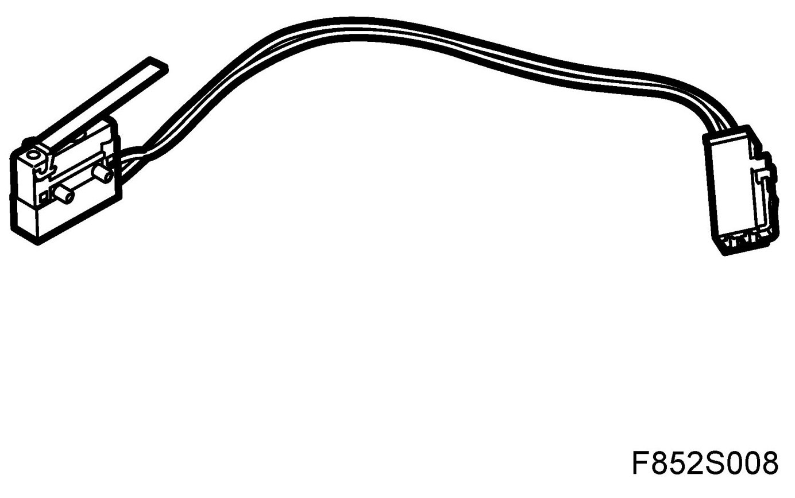
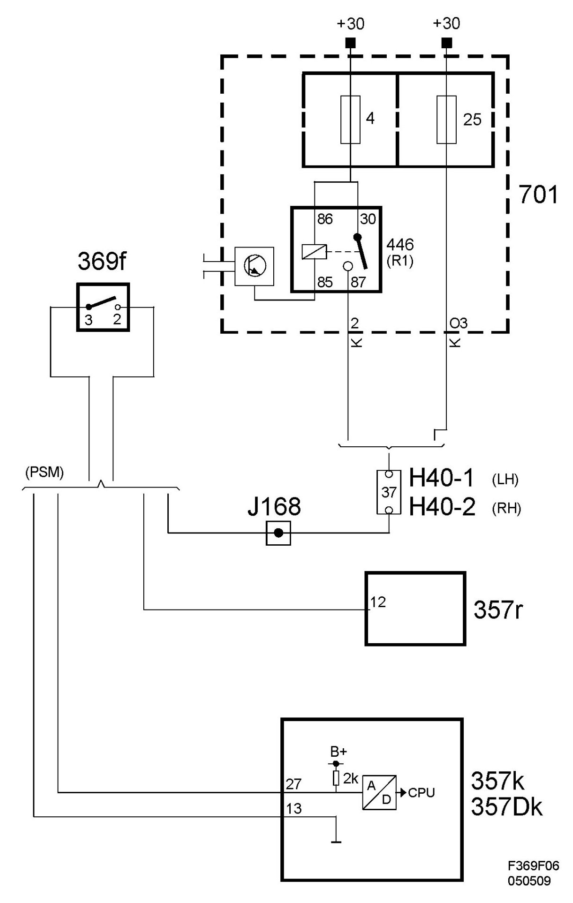

Microswitch For Backrest, Folded Down Position (369F)
Microswitch For Backrest, Folded Down Position (369f)
Location
Microswitch for backrest, folded down position (369f)

Main task
The microswitch is used to determine whether the seat backrest is folded down.
Type
T he switch is of making type. In its normal state (backrest in normal position), the switch is open. Folding down the backrest will close the switch and the relay input is energised.
Connect
Switch pin 2 is connected to the positive supply via fuse 25 or relay 446. When the switch is made, positive voltage is supplied to the relay unit (357r) pin 12 from switch pin 3.
Diagram
